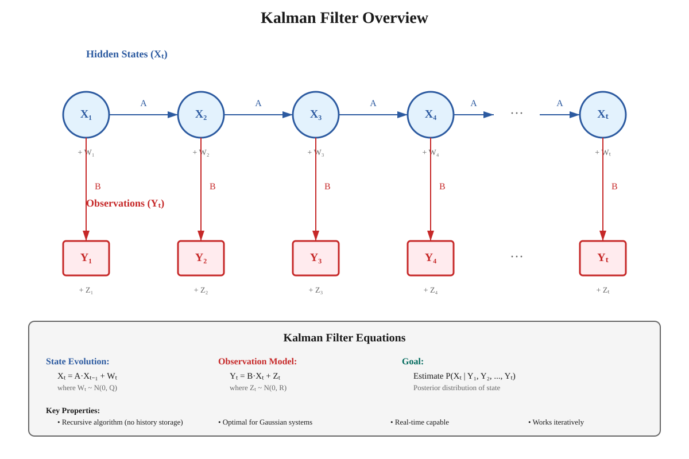
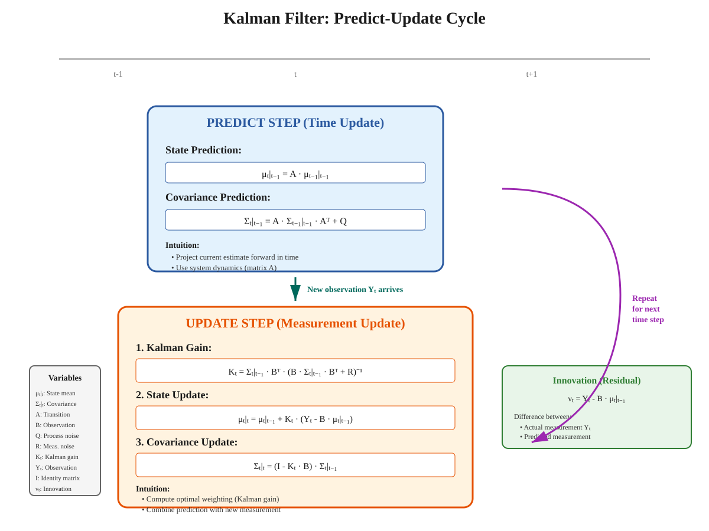
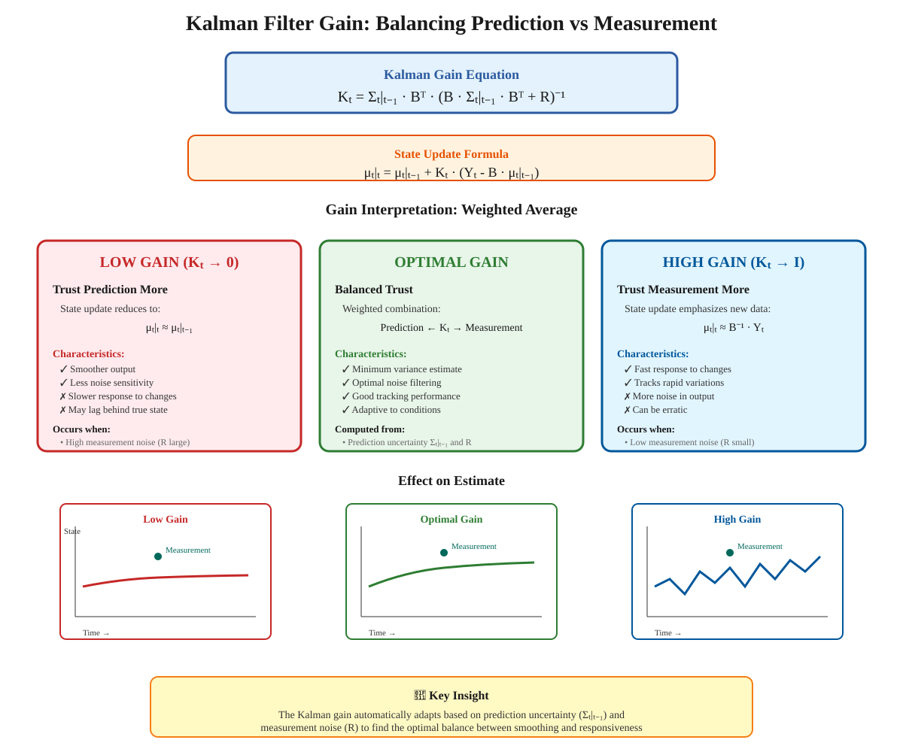

Kalman Filter
Quick Navigation
- Introduction
- Linear Dynamical Systems
- Observation Model
- Kalman Filter Algorithm
- Prediction and Update Steps
- Filter Gain
- Mathematical Framework
- Optimality and Robustness
- Applications
- Implementation Resources
- References & Further Reading
Introduction
The Kalman filter is an algorithm for estimating a process seen only through noisy observations. It provides an elegant solution to one of the most fundamental problems in signal processing and control theory: how to combine multiple noisy measurements to produce accurate estimates of hidden states.

Key Characteristics:
- Simple and Efficient: Computationally lightweight recursive algorithm
- Optimal Estimator: Provides minimum variance estimates under Gaussian assumptions
- Real-Time Capable: Works iteratively without storing complete observation history
- Widely Applicable: Used in navigation, control systems, econometrics, and more
Relationship to Hidden Markov Models:
The Kalman filter is closely related to Hidden Markov Models (HMMs) but operates in continuous state spaces rather than discrete states. Both frameworks model:
- A hidden state Xₜ that evolves over time
- Noisy observations Yₜ of the hidden state
- A Markov process governing state transitions
Example Application:
Consider designing a heart rate monitor:
- State Xₜ: True heart rate at time t
- Observation Yₜ: Noisy electrical signal from sensor
- Goal: Estimate true heart rate given observations Y₁ through Yₜ
- Challenge: Individual observations are too noisy for reliable estimates
The Kalman filter combines information from multiple observations to produce smooth, accurate estimates that balance responsiveness with noise reduction.
Linear Dynamical Systems
The Kalman filter operates on a linear dynamical system that describes how the hidden state evolves over time.
State Evolution Model:
Xₜ = A·Xₜ₋₁ + Wₜ
Components:
- Xₜ: State vector at time t (e.g., position, velocity, heart rate)
- A: State transition matrix (encodes system dynamics)
- Wₜ: Process noise (Gaussian random vector)
- Xₜ₋₁: Previous state
Key Assumptions:
- Linearity: Next state is a linear function of previous state
- Gaussian Noise: Process noise Wₜ ~ N(0, Q) with known covariance Q
- Known Dynamics: Transition matrix A is known or estimated
- Markov Property: Xₜ depends only on Xₜ₋₁, not earlier states
Vector-Valued States:
The state can be multidimensional. For example, tracking a moving object:
Xₜ = [position, velocity, acceleration]ᵀ
The transition matrix A encodes physical laws (e.g., position updates based on velocity).
Process Noise Interpretation:
- Captures uncertainty in system dynamics
- Represents unmodeled forces or disturbances
- Larger noise means less confidence in state predictions
- Covariance matrix Q determines noise characteristics
Observation Model
We don't observe the true state Xₜ directly. Instead, we receive noisy measurements through a linear observation model.
Observation Equation:
Yₜ = B·Xₜ + Zₜ
Components:
- Yₜ: Observation vector at time t
- B: Observation matrix (maps state to measurement space)
- Xₜ: True hidden state
- Zₜ: Measurement noise (Gaussian random vector)
Measurement Noise:
- Distribution: Zₜ ~ N(0, R) with known covariance R
- Independence: Measurement noise is independent of process noise
- Characteristics: Captures sensor accuracy and environmental interference
Example - Heart Rate Monitor:
True heart rate: Xₜ = 75 bpm
Observation: Yₜ = 73 bpm (with measurement noise)
The observation matrix B might scale the true heart rate to match sensor output units, and Zₜ represents electrical interference.
Joint Gaussian Assumption:
Under the assumption that X₁, W₁, W₂, ..., Z₁, Z₂, ... are jointly Gaussian, all conditional distributions remain Gaussian. This property enables closed-form solutions for the Kalman filter equations.
Kalman Filter Algorithm
The Kalman filter operates through a predict-update cycle that recursively estimates the state at each time step.

High-Level Operation:
The filter combines two sources of information:
- Prediction: Estimate of Xₜ based on previous observations Y₁, ..., Yₜ₋₁
- Correction: Adjustment based on new observation Yₜ
The result is an optimal weighted average that balances these two estimates.
Advantages of Recursive Processing:
- Memory Efficient: Only stores current state estimate and covariance
- Real-Time Capable: Processes observations as they arrive
- No Batch Requirement: Doesn't need all observations upfront
- Online Learning: Continuously updates estimates with new data
Contrast with Batch Methods:
- Batch algorithms: Require all observations Y₁, ..., Yₙ before processing
- Kalman filter: Processes each observation sequentially
- Storage: Batch methods store entire history; Kalman filter stores only summary statistics
State Representation:
At each time t, the filter maintains:
- Mean estimate: μₜ = E[Xₜ | Y₁, ..., Yₜ]
- Covariance: Σₜ = Cov(Xₜ | Y₁, ..., Yₜ)
These fully characterize the posterior distribution P(Xₜ | Y₁, ..., Yₜ) under Gaussian assumptions.
Prediction and Update Steps
The Kalman filter algorithm consists of two alternating steps performed at each time t.
Step 1: Prediction (Time Update)
Project the current state estimate forward to the next time step using the system dynamics.
Prediction Equations:
μₜ₊₁|ₜ = A·μₜ
Σₜ₊₁|ₜ = A·Σₜ·Aᵀ + Q
Interpretation:
- μₜ₊₁|ₜ: Predicted state mean at t+1 given observations through t
- Σₜ₊₁|ₜ: Predicted state covariance (uncertainty increases due to process noise Q)
- Uses system model Xₜ₊₁ = A·Xₜ + Wₜ₊₁
Mathematical Justification:
Using the law of total probability:
P(Xₜ₊₁ | Y₁:ₜ) = ∫ P(Xₜ₊₁ | Xₜ) · P(Xₜ | Y₁:ₜ) dXₜ
This integral has a closed form for Gaussian distributions, yielding the prediction equations.
Step 2: Update (Measurement Update)
Incorporate the new observation Yₜ₊₁ to refine the predicted state estimate.
Update Equations:
Kₜ₊₁ = Σₜ₊₁|ₜ·Bᵀ·(B·Σₜ₊₁|ₜ·Bᵀ + R)⁻¹
μₜ₊₁ = μₜ₊₁|ₜ + Kₜ₊₁·(Yₜ₊₁ - B·μₜ₊₁|ₜ)
Σₜ₊₁ = (I - Kₜ₊₁·B)·Σₜ₊₁|ₜ
Components:
- Kₜ₊₁: Kalman gain (weighting factor)
- Yₜ₊₁ - B·μₜ₊₁|ₜ: Innovation (measurement residual)
- Innovation: Difference between actual observation and predicted observation
Bayesian Update:
Using Bayes' rule:
P(Xₜ₊₁ | Y₁:ₜ₊₁) ∝ P(Yₜ₊₁ | Xₜ₊₁) · P(Xₜ₊₁ | Y₁:ₜ)
The update equations implement this Bayesian update in closed form for Gaussian distributions.
Initialization (t=1):
For the first time step, the prediction step uses the prior distribution:
μ₁|₀ = E[X₁]
Σ₁|₀ = Cov(X₁)
These are specified by the initial state distribution in the model.
Filter Gain
The Kalman gain Kₜ is a crucial parameter that determines how much weight to place on new observations versus predictions.

Gain Equation:
Kₜ = Σₜ|ₜ₋₁·Bᵀ·(B·Σₜ|ₜ₋₁·Bᵀ + R)⁻¹
Interpretation:
The gain represents the optimal weighting that minimizes the posterior covariance. It balances:
- Prediction uncertainty: Σₜ|ₜ₋₁ (how uncertain is the prediction?)
- Measurement noise: R (how noisy are observations?)
Gain Behavior:
Low Gain (Kₜ → 0):
- Less weight on new observations
- More weight on predictions
- Smoother output (less responsive to changes)
- Occurs when: Measurement noise R is large or prediction uncertainty Σₜ|ₜ₋₁ is small
High Gain (Kₜ → I):
- More weight on new observations
- Less weight on predictions
- More responsive (but potentially erratic)
- Occurs when: Measurement noise R is small or prediction uncertainty Σₜ|ₜ₋₁ is large
Trade-offs:
- Smoothing vs Responsiveness: Low gain smooths noise but delays response to real changes
- Tracking vs Stability: High gain tracks changes quickly but amplifies measurement noise
- Optimal Balance: Kalman gain automatically finds the optimal trade-off
Manual Gain Tuning:
If model parameters are unknown:
- Start with moderate gain values
- Increase gain if filter is too slow to respond
- Decrease gain if output is too noisy
- Monitor innovation sequence for whiteness (diagnostic check)
Mathematical Framework
The complete Kalman filter algorithm with all equations and notation.
System Model:
Xₜ = A·Xₜ₋₁ + Wₜ (State equation)
Yₜ = B·Xₜ + Zₜ (Observation equation)
Noise Assumptions:
Wₜ ~ N(0, Q) (Process noise)
Zₜ ~ N(0, R) (Measurement noise)
X₀ ~ N(μ₀, Σ₀) (Initial state)
Algorithm:
Initialization:
μ₀|₀ = μ₀
Σ₀|₀ = Σ₀
For t = 1, 2, 3, ...:
Predict:
μₜ|ₜ₋₁ = A·μₜ₋₁|ₜ₋₁
Σₜ|ₜ₋₁ = A·Σₜ₋₁|ₜ₋₁·Aᵀ + Q
Update:
Kₜ = Σₜ|ₜ₋₁·Bᵀ·(B·Σₜ|ₜ₋₁·Bᵀ + R)⁻¹
μₜ|ₜ = μₜ|ₜ₋₁ + Kₜ·(Yₜ - B·μₜ|ₜ₋₁)
Σₜ|ₜ = (I - Kₜ·B)·Σₜ|ₜ₋₁
Variable Definitions:
- μₜ|ₜ: Posterior mean of Xₜ given Y₁:ₜ
- Σₜ|ₜ: Posterior covariance of Xₜ given Y₁:ₜ
- μₜ|ₜ₋₁: Predicted mean of Xₜ given Y₁:ₜ₋₁
- Σₜ|ₜ₋₁: Predicted covariance of Xₜ given Y₁:ₜ₋₁
- Kₜ: Kalman gain matrix
- I: Identity matrix
Computational Complexity:
For state dimension n and observation dimension m:
- Predict step: O(n³) for covariance update
- Update step: O(m³ + n·m²) for gain computation
- Total per iteration: O(n³ + m³)
Numerical Stability:
The standard Kalman filter equations can suffer from numerical issues. Stable implementations use:
- Joseph form: Alternative covariance update that guarantees positive definiteness
- Square-root filters: Propagate Cholesky factors instead of covariances
- UD factorization: Separate treatment of uncertainty magnitude and direction
Optimality and Robustness
The Kalman filter has strong theoretical guarantees under certain conditions.
Optimality Properties:
The Kalman filter is optimal when:
- System is truly linear: Xₜ = A·Xₜ₋₁ + Wₜ
- Observations are truly linear: Yₜ = B·Xₜ + Zₜ
- All noise is Gaussian with known covariances
- Model parameters (A, B, Q, R) are exactly known
Types of Optimality:
- Minimum Variance: Minimizes trace(Σₜ|ₜ) among all linear estimators
- Maximum Likelihood: Provides maximum likelihood estimate of state
- Bayesian Optimal: Computes exact posterior P(Xₜ | Y₁:ₜ) under Gaussian assumptions
- MMSE: Minimizes mean squared error E[||Xₜ - X̂ₜ||²]
Robustness in Practice:
The optimality conditions are rarely met in real systems, yet the Kalman filter works remarkably well because:
- Robust to model mismatch: Performance degrades gracefully with modeling errors
- Approximate linearity sufficient: Works if system is approximately linear in operating range
- Non-Gaussian noise: Still performs well if noise is not exactly Gaussian
- Parameter uncertainty: Reasonable estimates of Q and R often sufficient
When the Kalman Filter Fails:
The filter may perform poorly when:
- Strong nonlinearities: System dynamics are highly nonlinear
- Non-Gaussian noise: Heavy-tailed or multimodal noise distributions
- Model errors: Large discrepancies between assumed and actual dynamics
- Outliers: Observations contaminated by occasional large errors
Solutions for Challenging Cases:
- Extended Kalman Filter (EKF): Linearizes nonlinear systems around current estimate
- Unscented Kalman Filter (UKF): Uses sigma points for better nonlinear approximation
- Particle Filter: Represents posterior with samples (no linearity assumption)
- Adaptive Kalman Filter: Estimates Q and R online from data
- Robust Kalman Filter: Modifies update to reduce sensitivity to outliers
Applications
The Kalman filter is used across numerous domains for state estimation and prediction.
Navigation and Positioning:
- GPS Systems: Combines satellite signals with inertial measurements
- Autonomous Vehicles: Fuses data from cameras, lidar, radar, and IMU
- Spacecraft Navigation: Estimates position and velocity from ground tracking
- Marine Navigation: Integrates GPS, compass, and velocity sensors
Robotics and Control:
- Robot Localization: Estimates robot position from noisy wheel encoders and sensors
- Manipulator Control: Tracks end-effector position despite joint sensor noise
- Drone Stabilization: Estimates attitude from accelerometers and gyroscopes
- SLAM: Simultaneous localization and mapping in unknown environments
Signal Processing:
- Speech Enhancement: Removes noise from speech signals
- Audio Processing: Estimates clean audio from noisy recordings
- Radar Tracking: Tracks aircraft positions from radar returns
- Sonar Processing: Estimates underwater object locations
Biomedical Engineering:
- Heart Rate Monitoring: Filters noisy ECG signals to estimate true heart rate
- Blood Pressure Estimation: Combines multiple sensor measurements
- Brain-Computer Interfaces: Decodes neural signals from EEG/ECoG
- Medical Imaging: Reduces noise in MRI and CT reconstructions
Finance and Economics:
- Time Series Forecasting: Estimates trends in economic indicators
- Portfolio Optimization: Tracks asset returns and covariances
- High-Frequency Trading: Estimates true prices from noisy tick data
- Macroeconomic Modeling: Estimates unobserved economic states
Computer Vision:
- Object Tracking: Follows moving objects in video streams
- Visual Odometry: Estimates camera motion from image sequences
- 3D Reconstruction: Combines multiple views to estimate 3D structure
- Motion Capture: Tracks body pose from marker positions
Weather and Climate:
- Data Assimilation: Combines weather observations with numerical models
- Storm Tracking: Predicts hurricane paths from satellite and radar data
- Climate Prediction: Estimates climate variables from sparse measurements
- Oceanography: Tracks ocean currents and temperatures
Implementation Resources
Python Libraries:
FilterPy:
from filterpy.kalman import KalmanFilter
import numpy as np
# Create Kalman filter
kf = KalmanFilter(dim_x=2, dim_z=1)
# State transition matrix
kf.F = np.array([[1, 1], [0, 1]])
# Measurement matrix
kf.H = np.array([[1, 0]])
# Covariance matrices
kf.Q = np.eye(2) * 0.1 # Process noise
kf.R = np.array([[1]]) # Measurement noise
# Initial state
kf.x = np.array([[0], [0]])
kf.P = np.eye(2) * 1000
# Process measurement
kf.predict()
kf.update(measurement)
PyKalman:
from pykalman import KalmanFilter
kf = KalmanFilter(
transition_matrices=A,
observation_matrices=B,
transition_covariance=Q,
observation_covariance=R,
initial_state_mean=mu0,
initial_state_covariance=Sigma0
)
# Offline smoothing
filtered_state_means, filtered_state_covariances = kf.filter(observations)
# Online filtering
state_mean, state_covariance = kf.filter_update(
filtered_state_mean, filtered_state_covariance, observation
)
MATLAB:
% Create state-space model
sys = ss(A, G, C, 0, -1); % Discrete-time system
% Design Kalman filter
[kalmf, L, P] = kalman(sys, Q, R);
% Apply filter
[y_filtered, x_filtered] = lsim(kalmf, measurements);
OpenCV (C++):
#include <opencv2/video/tracking.hpp>
cv::KalmanFilter kf(4, 2, 0); // state_dim, measurement_dim, control_dim
// Set matrices
kf.transitionMatrix = (cv::Mat_<float>(4, 4) <<
1, 0, 1, 0,
0, 1, 0, 1,
0, 0, 1, 0,
0, 0, 0, 1);
// Prediction and correction
cv::Mat prediction = kf.predict();
cv::Mat estimated = kf.correct(measurement);
Interactive Demonstrations:
Kalman Filter Visualization:

Tutorial Notebooks:
- Kalman and Bayesian Filters in Python - Comprehensive tutorial with interactive examples
- FilterPy Examples - Documentation with code samples
Online Simulators:
- Kalman Filter Demo - Interactive web-based demonstrations
- Wikipedia Interactive Example - Simple tracking example
References & Further Reading
Foundational Papers:
- Kalman, R. E. (1960). "A New Approach to Linear Filtering and Prediction Problems." Journal of Basic Engineering, 82(1), 35-45. Link
- Kalman, R. E., & Bucy, R. S. (1961). "New Results in Linear Filtering and Prediction Theory." Journal of Basic Engineering, 83(1), 95-108.
Comprehensive Textbooks:
- Bar-Shalom, Y., Li, X. R., & Kirubarajan, T. (2001). Estimation with Applications to Tracking and Navigation. Wiley-Interscience.
- Anderson, B. D., & Moore, J. B. (2005). Optimal Filtering. Dover Publications.
- Simon, D. (2006). Optimal State Estimation: Kalman, H∞, and Nonlinear Approaches. Wiley-Interscience.
Tutorial Resources:
- Welch, G., & Bishop, G. (2006). "An Introduction to the Kalman Filter." Technical Report TR 95-041, University of North Carolina. PDF
- Labbe, R. (2024). "Kalman and Bayesian Filters in Python." GitHub Book
Extensions and Variants:
- Julier, S. J., & Uhlmann, J. K. (2004). "Unscented Filtering and Nonlinear Estimation." Proceedings of the IEEE, 92(3), 401-422.
- Wan, E. A., & Van Der Merwe, R. (2000). "The Unscented Kalman Filter for Nonlinear Estimation." Adaptive Systems for Signal Processing, Communications, and Control Symposium.
Online Resources:
- Kalman Filter Explained - Visual explanations with intuitive diagrams
- FilterPy Documentation - Python implementation guide